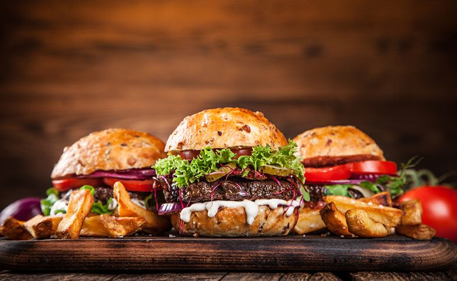

Desde 1970 localizada no coração dos bairros de Vila Mariana e Paraiso a Burguer Kong se tornou um dos mais tradicionais pontos de encontro de São Paulo para todas as idades. Foi fundada no dia 15 de outubro de 1970 com o nome New Lareira's localizada na Rua Joinville esquina com a Av. 23 de Maio. Em 1983 mudou seu nome para o atual New's Lanchonete. Em 1995 devido as obras do tunel Ayrton Senna a Lanchonete mudou-se para a quadra de trás permanecendo na mesma Rua Joinville porém na esquina com a Rua Pirapora.